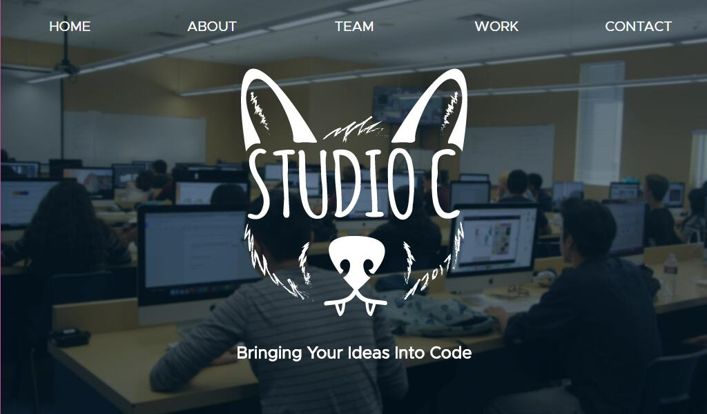
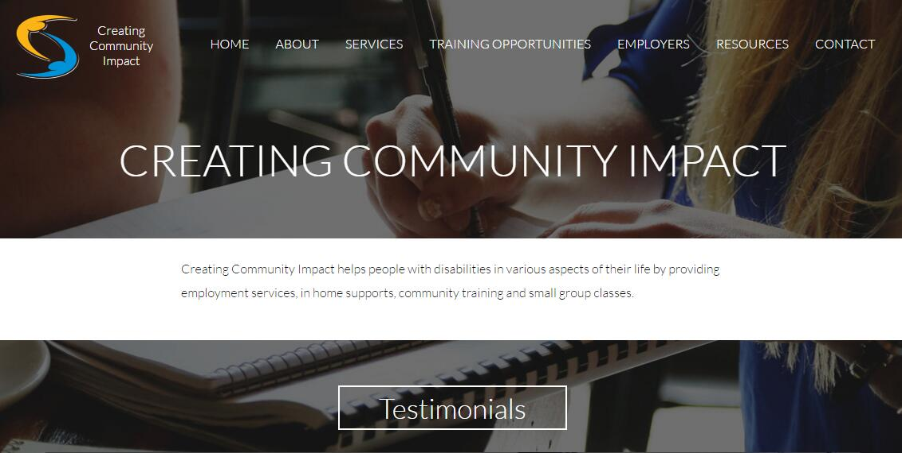
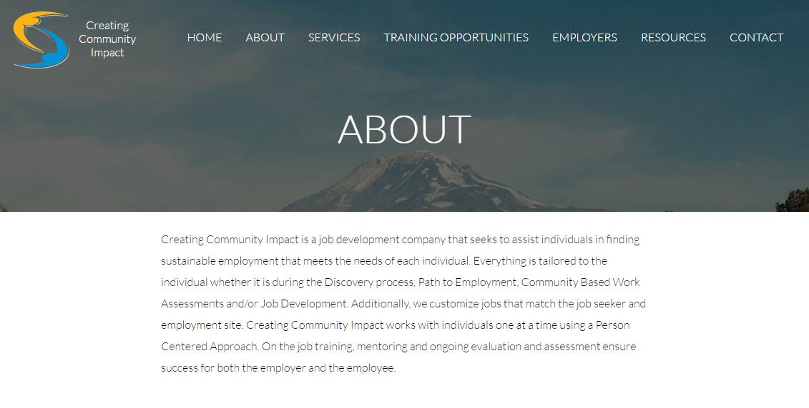

Studio C
About Studio C
Studio C is an in-school company run by the Web Design seniors. Studio C has a total of five departments: content, coding, marketing, graphics, and testing. All works created by Studio C are non-profit in order to improve older sites or help clients better convey their message. Studio C have created various projects, including websites and mobile app.
I am in the coding department of Studio C and I've worked on the following projects:
Studio C Website
This is the official website for Studio C. It includes the company's contact information as well as the employees. Click here to visit the site!
Creating Community Impact
 This is the website for Creating Community Impact. It is a non-profit organization that helps people with disabilities or other hardships to find jobs. The organization also provide housing, community trainings, and classes to help those in need. Click here to visit the site!